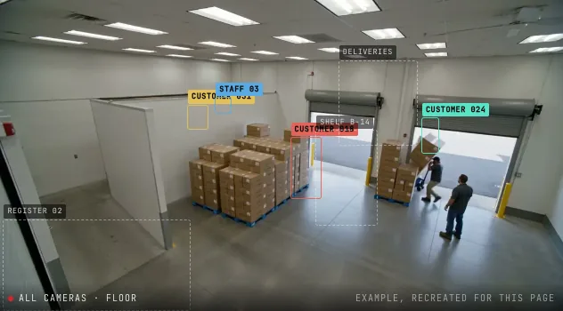

Argus sub-project
Argus One
The theft-detection AI. It watches live store cameras, tracks body pose and gives each person one risk score.
- Private repo

By the numbers
- 1risk score per person
- About halfof the commits are mine
What I did
- Combines person detection, body pose and visual signals into one risk score per person.
- Wrote about half the commits, plus the tests, docs, the streaming link and deployment.
- Fine-tuned a vision model on store camera clips to cut false alarms.
- Built the streaming agent: a desktop app that sends a store’s camera feeds to Argus.